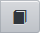

Учебные курсы
Учебные курсы в системе "Сетевой Город" делятся на две категории:
1.
Наполняемые учебные курсы
2.
Готовые учебные курсы, интегрированные с системой.
Для просмотра материала учебного курса нажмите на кнопку - эта кнопка доступна всем пользователям.
Если вы являетесь преподавателем какого-либо предмета, то вам также доступны кнопки (назначение нового задания) и

(просмотр журнала результатов).
Наполняемые учебные курсы Наполняемые учебные курсы - это курсы, которые вы сами создаете и можете самостоятельно ввести в систему "Сетевой Город". Для этого вам нужно будет воспользоваться программой "Импорт курсов", ссылка на которую и на руководство по ее использованию находится на странице Создание учебных курсов. Там же вы найдете пояснения относительно того, в каком формате нужно сделать свой учебный курс, чтобы его можно было импортировать в систему.
Готовые учебные курсы, интегрированные с системой "Сетевой Город"
Это электронные учебные курсы, которые выпускаются нашими партнерами, в частности, компанией "Новый Диск".
Применение в учебном процессе системы тестирования "РОСТ" "Региональная Образовательная Система Тестирования" ("РОСТ") может использоваться в качестве системы итоговой проверки знаний, назначения домашних заданий, а также в качестве варианта обеспечения дистанционного обучения. С подробной информацией о системе тестирования "РОСТ" вы можете ознакомиться, перейдя по ссылке http://www.ir-tech.ru/?products=rost.